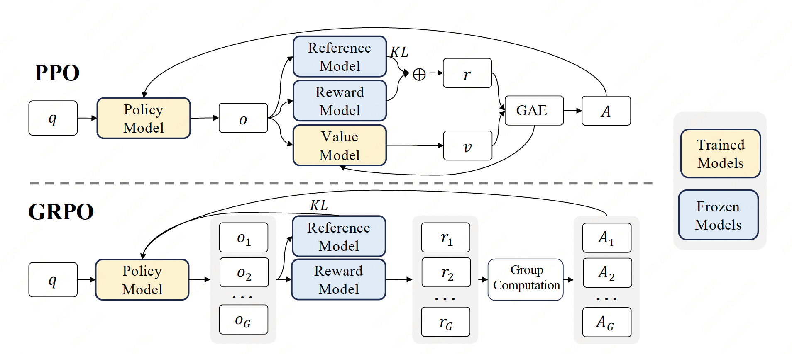
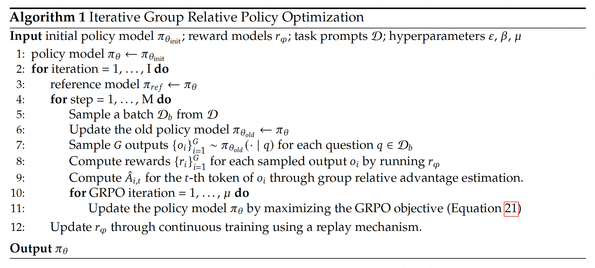

Group Relative Policy Optimization#
Note
Reinforcement learning (RL) has been proven to be effective in further improving the overall ability of LLMs after the Supervised Fine-Tuning (SFT) stage. DeepSeek Math[] introduces an RL algorithm, Group Relative Policy Optimization (GRPO), which has proven to be both efficient and effective.
PPO Review#
Proximal Policy Optimization (PPO)[] is an actor-critic RL algorithm that is widely used in the RL fine-tuning stage of LLMs. In particular, it optimizes LLMs by maximizing the following surrogate objective:
where \(\pi_{\theta}\) and \(\pi_{\theta_{\text{old}}}\) are the current and old policy models, and \(q\), \(o\) are questions and outputs sampled from the question dataset and the old policy \(\pi_{\theta_{\text{old}}}\) respectively. \(\epsilon\) s a clipping-related hyper-parameter introduced in PPO for stabilizing training. \(A_{t}\) is the advantage, which is computed by applying Generalized Advantage Estimation (GAE), based on the rewards \(\{r_{\ge t\}}\) and a learned value function \(V_{\psi}\) (this blog for detail):
Compute per-token rewards:
\(\text{KL}(t) = \log({\pi_{\theta_{\text{old}}}(o_{t}|q,o<t)}/{\pi_{\text{ref}}(o_{t}|q,o<t)})\)
If \(t\) is not the last token \(r_{t} = -\beta\text{KL}(t)\)
If \(t\) is the last token \(r_{t} = r_{\phi}(q, o) - \beta\text{KL}(t)\)
\(\sum_{t=1}^{T}r_{t} = r_{\phi}(q, o) - \beta\log({\pi_{\theta_{\text{old}}}(o|q)}/{\pi_{\text{ref}}(o|q)})\) is the reward PPO aims to optimize.
Compute TD error \(\delta_{t} = r_{t} + \gamma V_{\psi}(t+1) - V_{\psi}(t) \).
Compute Advantage Function using GAE: \(A_{t} = \sum(\gamma\lambda)^{l}\delta_{t+l}\).
Tip
For an event \(X\) with probability \(p\), it’s self information is
The less probable an event is, the more surprising it is and the more information it yields. The term
can be interpreted as our relative surprise. The KL divergence between \(P\) and \(Q\) is
can be interpreted as the expected relative surprise from using \(Q\) instead of \(P\) when the actual distribution is \(P\). It measures how one probability distribution \(P\) is different from the reference probability distribution \(Q\).
Tip
In PPO, a value function needs to
be trained alongside the policy model and to mitigate over-optimization of the reward model.
While in the LLM context, usually only the last token is assigned a
reward score by the reward model, which may complicate the training of a value function that is
accurate at each token.
Additionaly, as the value function employed in PPO is typically another model of comparable size as
the policy model, it brings a substantial memory and computational burden.
GRPO#

To address this, we propose Group Relative Policy Optimization (GRPO), for each question \(q\), GRPO samples a group of outputs \(\{o_1, o_2, \dots , o_G\}\) from the old policy \(\pi_{\theta_{old}}\) and then optimizes the policy model by maximizing the following objective:
where \(\epsilon\) and \(\beta\) are hyper-parameters, and \(\hat{A}_{i,t}\) is the advantage calculated based on relative rewards of the outputs inside each group only. Also note that, instead of adding KL penalty in the reward, GRPO regularizes by directly adding the KL divergence between the trained policy and the reference policy to the loss, avoiding complicating the calculation of \(\hat{A}_{i,t}\). And different from the KL penalty term used in PPO, we estimate the KL divergence with the following unbiased estimator:
which is guaranteed to be positive.
Tip
A good estimator is unbiased (it has the right mean) and has low variance.
Since:
So \(\mathbb{E}_{x\sim P}\left[\frac{Q(x)}{P(x)} - \log\frac{Q(x)}{P(x)} - 1\right]\) is an unbiased estimator of the KL divergence.
Outcome Supervision RL with GRPO#
Formally, for each question \(q\), a group of outputs \(\{o_1,o_{2},\dots,o_{G}\}\) are sampled from the old policy model \(\pi_{\theta_{\text{old}}}\). A reward model is then used to score the outputs, yielding \(G\) rewards \(\mathbf{r}=\{r_1,r_{2},\dots,r_{G}\}\) correspondingly.
Subsequently, these rewards are normalized by subtracting the group average and dividing by the group standard deviation. Outcome supervision provides the normalized reward at the end of each output \(o_{i}\) and sets the advantages \(\hat{A}_{i,t}\) of all tokens in the output as the normalized reward:
Tip
GRPO 的优势:
没有 critic model，省资源。
Group by query，学同一个 query 中相对好的 response，query 间相互隔开。不会出现只学那些简单且 reward 高的 query 的情况。
Process Supervision RL with GRPO#
Outcome supervision only provides a reward at the end of each output, which may not be sufficient and efficient to supervise the policy in complex mathematical tasks. We also explore process supervision, which provides a reward at the end of each reasoning step.
Formally, given the question \(q\) and \(G\) sampled outputs \(\{o_1,o_2,\dots,o_G\}\), a process reward model is used to score each step of the outputs, yielding corresponding rewards:
where \(\text{index}(j)\) is the end token index of the \(j\)-th step, and \(K_i\) is the total number of steps in the \(i\)-th output. We also normalize these rewards with the average and the standard deviation
Subsequently, the process supervision calculates the advantage of each token as the sum of the normalized rewards from the following steps
Iterative RL with GRPO#
As the reinforcement learning training process progresses, the old reward model may not be sufficient to supervise the current policy model. Therefore, we also explore the iterative RL with GRPO. As shown in Algorithm 1,

in iterative GRPO, we generate new training sets for the reward model based on the sampling results from the policy model and continually train the old reward model using a replay mechanism that incorporates 10% of historical data. Then, we set the reference model as the policy model, and continually train the policy model with the new reward model.
Caution
GRPO 相比 PPO 的效果? Monte-Carlo sampling 会不会使得训练变得很慢？
KL 散度直接放在 loss 里和放在 reward 里的区别？
Outcome supervision or Process supervision?
How to train process reward model?
Iterative RL with GRPO 的效果？
Group by query + Monte-Carlo sampling + critic model 会不会更好。